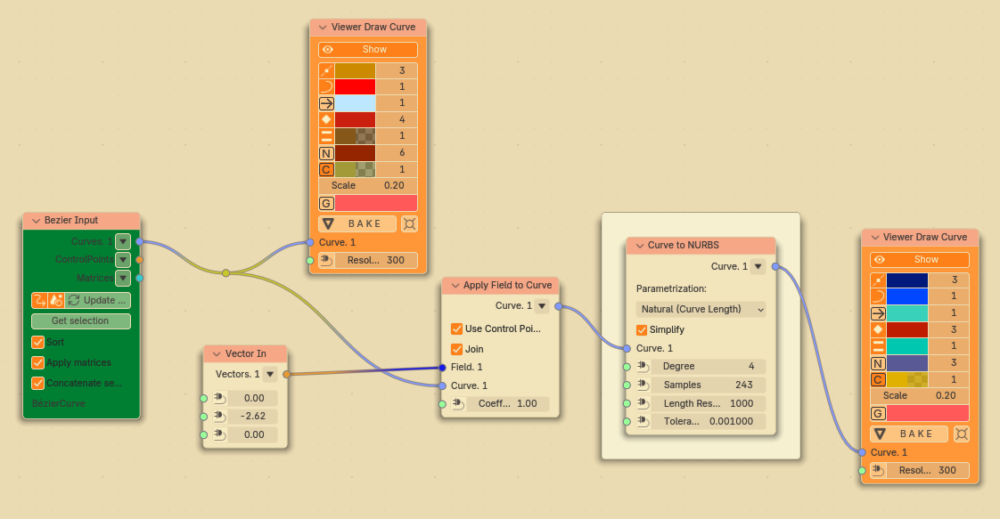
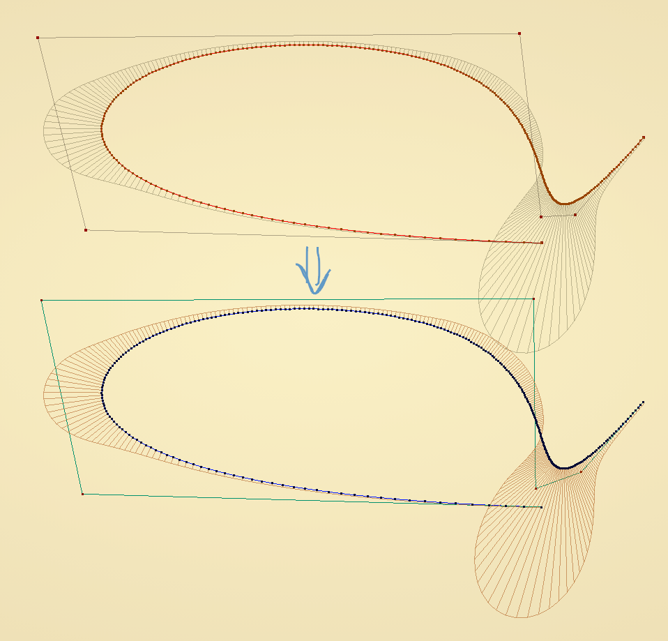
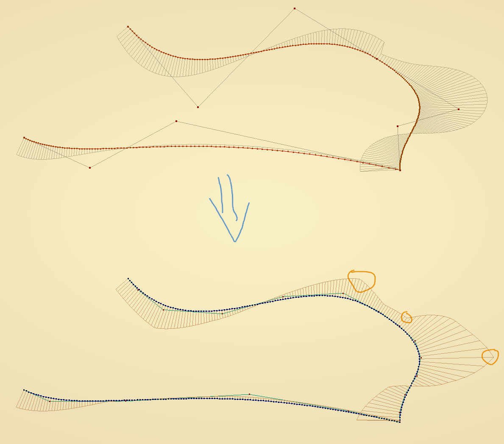
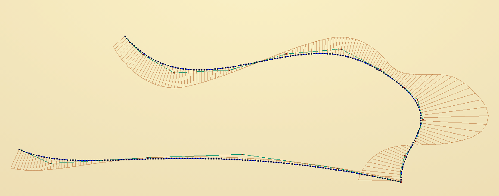
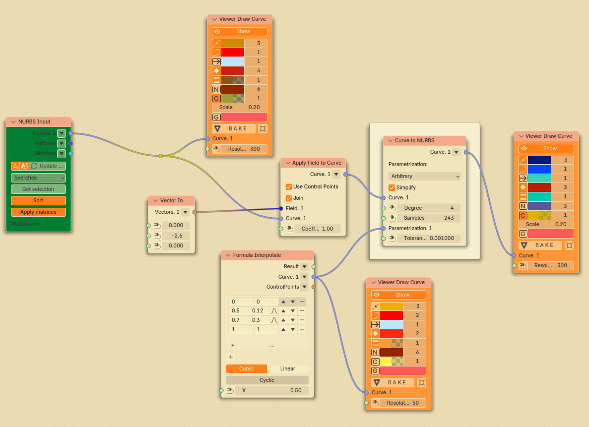
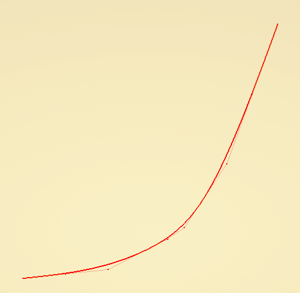
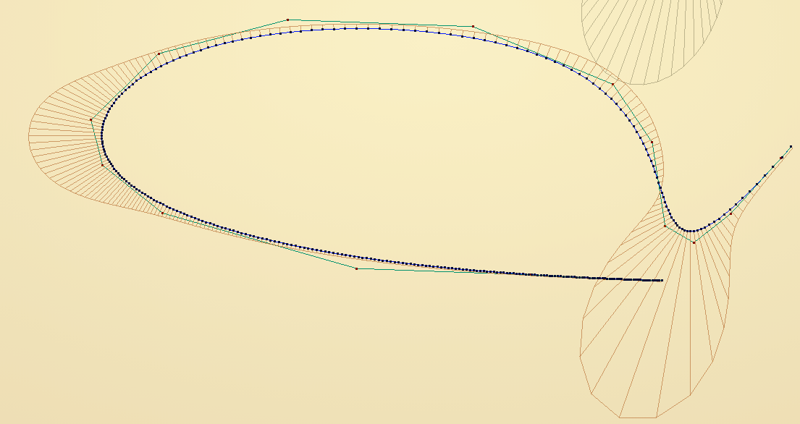
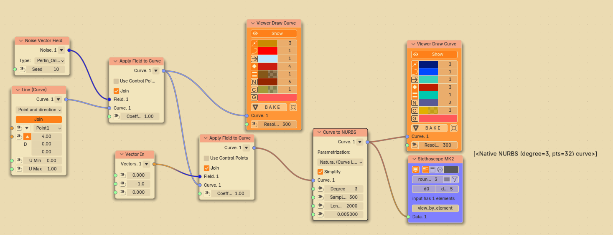
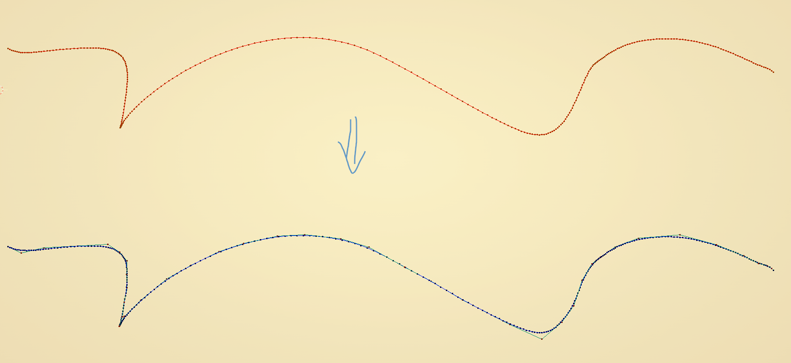
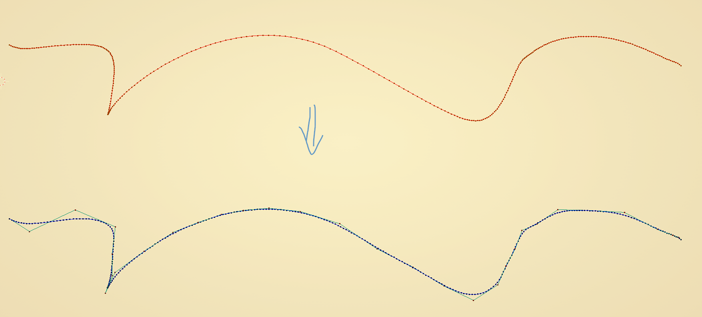

Curve to NURBS¶
Functionality¶
This node allows to:
Convert arbitrary (non-NURBS) curve to NURBS curve;
Reparametrize any curve: given one curve, make a NURBS curve with “natural” (uniform) parametrization, or with arbitrary parametrization.
More specifically, what this node does is:
Evaluates initial curve at some number of points; these node can be defined by uniform distribution of curve T parameter, or by dividing curve into segments of equal length. If initial curve is already NURBS or NURBS-like, this node will always use curve’s “fracture” (crisp) points as such base points, in order to preserve fracture points at same places.
Interpolates a NURBS curve through these points, using one of criteria to define T parameters of new curve at these points - this will define parametrization of the curve.
In the end, resulting NURBS curve is simplified by removing as much unnesessary knots as possible, while trying to change it not too much.
Inputs¶
This node has the following inputs:
Curve. The curve to be converted to NURBS. This input is mandatory.
Degree. Degree of resulting NURBS curve. The default value is 3.
Samples. Number of base points on the curve, which will be used for interpolation. More samples will give NURBS curve which follows initial curve more precisely, but have more control points (and will take more time to calculate). The default value is 50.
LengthResolution. This input is available only when Parametrization parameter is set to Natural (Curve Length). Resolution which is used to calculate curve length. Bigger value will give more precise calculation, but will take more time to calculate. The default value is 50.
Parametrization. This input is available and mandatory only when Parametrization parameter is seto to Arbitrary. The curve in this input defines wanted parametrization of NURBS curve. The node expects a curve which lies in XOY plane and has [0; 1] as it’s domain, and it’s expected that Y coordinate of point on the curve is growing with growth of T parameter, while remaining in [0; 1] bounds.
Tolerance. This input is available only when Simplify parameter is checked. This defines tolerance value used when removing excessive knots of interpolated NURBS curve. Lower values will give curves which follow initial curve more precisely, but have more control points. The default value is 1e-6 (one per million).
Parameters¶
This node has the following parameters:
Parametrization. This defines parametrization of resulting NURBS curve. The available options are:
Natural (Curve Length). Curve T parameter of some point on the curve will be equal (approximately) to length of the curve segment from start to that point.
Keep Original. Parametrization of resulting curve will be the same as parametrization of input curve.
Arbitrary. This allows to specify arbitrary curve parametrization by providing a curve in Parametrization input.
The default option is Natural (Curve Length).
Simplify. If checked, the node will try to simplify the curve after interpolation. With big enough values of Samples input, interpolated curve will have a lot of control points, some of which are not really necessary if you do not need too much precision. Checked by default.
Outputs¶
This node has the following output:
Curve. The resulting NURBS curve.
Examples of Usage¶
General nodes setup:
If we specify Parametrization = “Keep Original”, then for NURBS curves node will basically return the same curve (slightly modified due to algorithms involved):
So if you already have a NURBS curve, it does not make sense to use original parametrization. It may, however, make sense for generic curves, see below.
In the following case we already have Bezier curve, but we want to have a NURBS curve with uniform parametrization:
Note that while the curve is smooth, it’s curvature comb is not smooth. If we want it to be smooth, we can use NURBS curves of higher degree:
It is possible to create NURBS curves with arbitrary parametrization. Nodes setup:
“Formula interpolate” node defines the following reparametrization curve in this case:
This gives the following result:
Let’s check with arbitrary curve; in this case it’s a straight line segment deformed by vector noise field:
With Parametrization = “Keep Original” this gives:
With Parametrization = “Natural” this gives:

{kind=link}
{kind=link}
{kind=link}
{kind=link}
{kind=link}
{kind=link}
{kind=link}
{kind=link}
{kind=link}
{kind=link}